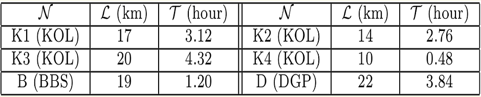
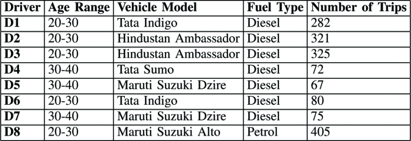
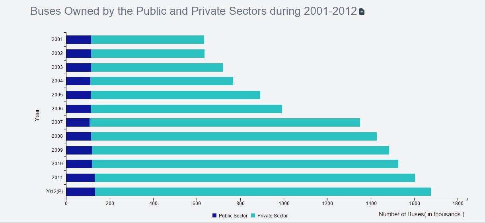
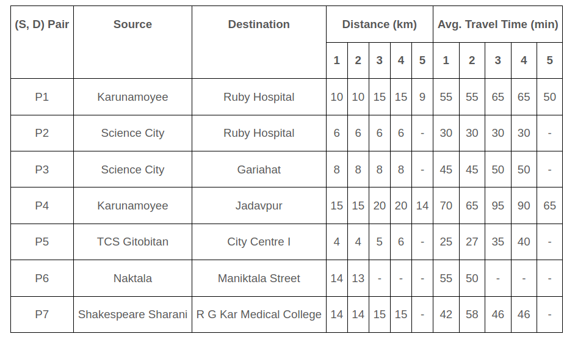

CityMap maintains dataset of three cities Kolkata (KOL), Bhubaneswar (BBS) and Durgapur (DGP), in the eastern part of India. While KOL and BBS are two state capitals with areas 1887 sqkm and 422 sqkm respectively, DGP is a suburban city with area 154 sqkm.
The dataset contains information for 30 users as follows:
1.Complete GPS annotated landmarks
2.Accelerometer data with timestamp for the entire route duration
3.Compass data with timestamp for the entire route duration

Route details (N : Route name – city in brackets, L: Route length, T : Daily avg. travel duration)Download
DRIVING STRESS DATASET
The dataset contains spatio-temporal driving data for 8 drivers over 1700 trips in 15 major routes. The cars are driven by 15 male drivers of age group between 20-40 years.
The sensor information collected are as follows:
1.Accelerometer
2.Gyroscope
3.Magnetometer
4.GPS sensor
5.Camera

Driver and Car details for in-house datasetDownload
URBAN EYE DATASET
Landmark database through War-Driving
UrbanEye maintains a landmark database for storing and maintaining landmark information over different bus routes, as collected through war-driving. There are two types of landmarks:
1. Volatile (stops)
2. Non-volatile (speed breakers and turns)
Each landmark is essentially a signature which is computed from the smart-phone sensor readings. Three primary sensors are being used for landmark detection -
1.Accelerometer
2.Gyroscope
3.Compass
During war-driving, we collect the landmark position information via GPS, and store it in a landmark database server. It can be noted that the position is an one time information which is collected for localizing the bus position during navigation. Apart from the position information, we collect sensor signatures for a landmark, time zone when the landmark is detected and mean and deviation of travel time between two landmarks.

Buses Owned by Private and Public Sector During 2001-2012Download
COMFRIDE
An exten-sive deployment of ComfRide involve 50 volunteers for a period of two years (at weekday, weekend; at 3 different time periods) over 28 routes in a state capital of India reveals that it can recom-mend routes with on average 30% better comfort level than the ones proposed by Google Maps as well as other baselines.

Data for rides from different source and destinationsDownload